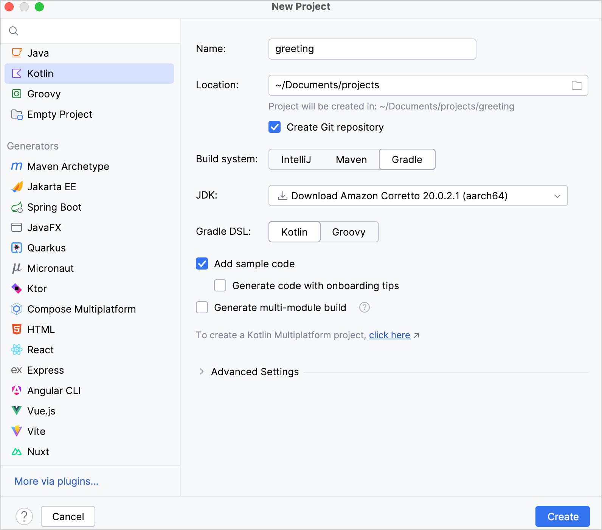

This tutorial demonstrates how to use IntelliJ IDEA and Gradle to create a JVM console application.
To get started, first download and install the latest version of IntelliJ IDEA.
Create a project
In IntelliJ IDEA, select File | New | Project.
In the panel on the left, select Kotlin.
Name the new project and change its location, if necessary.

Select the Gradle build system.
From the JDK list, select the JDK that you want to use in your project.
If the JDK is installed on your computer, but not defined in the IDE, select Add JDK and specify the path to the JDK home directory.
If you don't have the necessary JDK on your computer, select Download JDK.
Select the Kotlin DSL for Gradle.
Select the Add sample code checkbox to create a file with a sample "Hello World!" application.
Click Create.
You have successfully created a project with Gradle!
Specify a Gradle version for your project
You can explicitly specify a Gradle version for your project under the Advanced Settings section, either by using the Gradle Wrapper or a local installation of Gradle:
Gradle Wrapper:
From the Gradle distribution list, select Wrapper.
Disable the Auto-select checkbox.
From the Gradle version list, select your Gradle version.
Local installation:
From the Gradle distribution list, select Local installation.
For Gradle location, specify the path of your local Gradle version.
Explore the build script
Open the build.gradle.kts file. This is the Gradle Kotlin build script, which contains Kotlin-related artifacts and other parts required for the application:
plugins {
kotlin("jvm") version "2.1.20" // Kotlin version to use
}
group = "org.example" // A company name, for example, `org.jetbrains`
version = "1.0-SNAPSHOT" // Version to assign to the built artifact
repositories { // Sources of dependencies. See 1️⃣
mavenCentral() // Maven Central Repository. See 2️⃣
}
dependencies { // All the libraries you want to use. See 3️⃣
// Copy dependencies' names after you find them in a repository
testImplementation(kotlin("test")) // The Kotlin test library
}
tasks.test { // See 4️⃣
useJUnitPlatform() // JUnitPlatform for tests. See 5️⃣
}